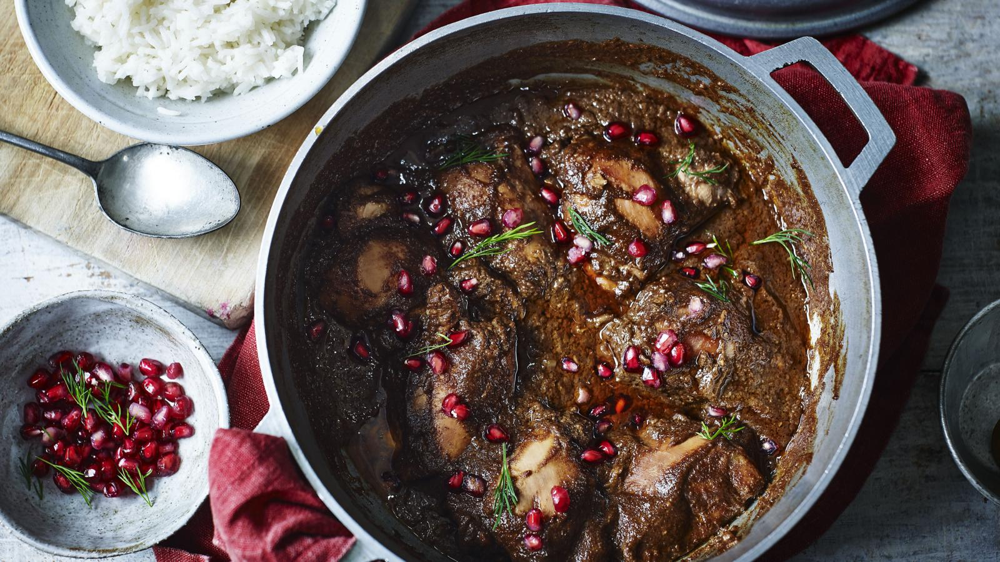

Fesenjan Recipe

Fesenjan is a delicious persian dish which is basically a chicken stew with pomegranate and walnuts, and is typically served with rice.
- Prep time: 10 minutes
- Cooking time: 2 hours
- Serves: 6-8
Ingredients
- 1-2 large chopped onions
- 2 tablespoons of unsalted butter
- 3 tablespoons of olive oil
- 5 tablespoons of pomegranate molasses
- 8 ounces of walnuts
- 2 pounds of chicken breast cut into medium size pieces
- 2 cups of chicken stock
- 2 tablespoons of sugar
- Spices
- 1/2 teaspoon of turmeric
- 1/4 teaspoon of cinnamon
- 1/4 teaspoon of ground nutmeg
- 1/4 teaspoon of ground black pepper
- optional: 1/2 cup of fresh pomegranate seeds for garnish
Directions
- Lightly toast the walnuts in a skillet, then pulse in a blender or food processor until finely ground
- Heat 1 tbsp of butter and 2 tbsps of olive oil over medium-high heat, then add the chicken pieces until golden brown on all sides
- Set aside the chicken, then saute the onions on the pan until transclucent with 1 tbsp of butter and 1 tbsp of oil.
- Add chicken and chicken stock, bring to a boil, then leave to simmer gently for 30 minutes.
- Add ground walnuts, pomegranate molassses, sugar, spices. Then cover again and leave to cook for 1 hour, stirring every 20 minutes or so to prevent the walnuts sticking to the bottom of the pan
- Add sugar or salt to taste, then add pomegranate seeds for garnish and serve with rice.
I am no chef, so credit to SimplyRecipes for their recipe that I used. Here's the link to the original.